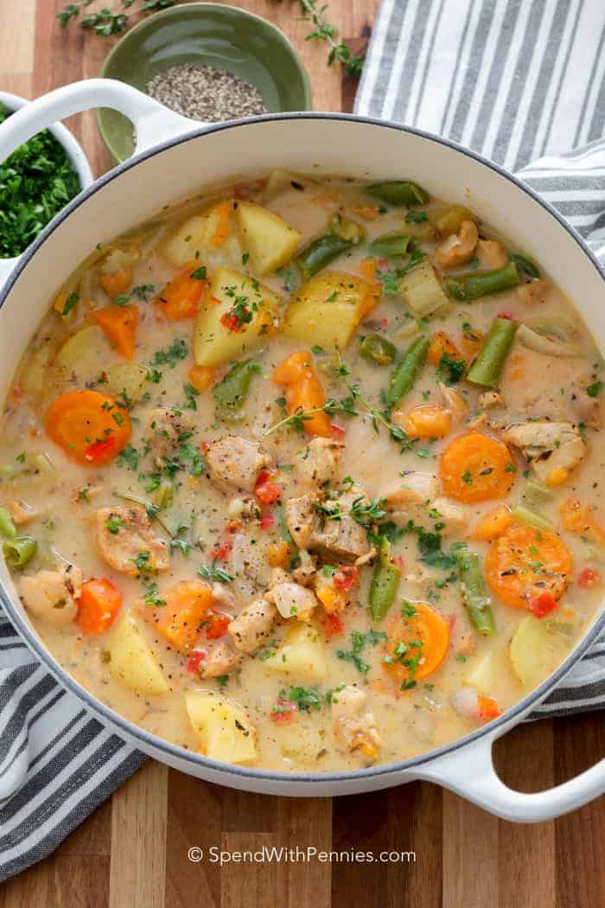

Chicken Stew

Desciption
Everyone loves chicken stew. Here I'll show you hgow to make it
You'll need a pot and some chicken.
Ingredients
- Chicken
- A Pot
- Potatoes
- Salt
- Pepper
Steps
- Cook Chicken in pot
- Boil Potatoes for 20 minutes
- Add water, salt, pepper and potaotes to pot with chicken.
- Simmer for 45 minutes